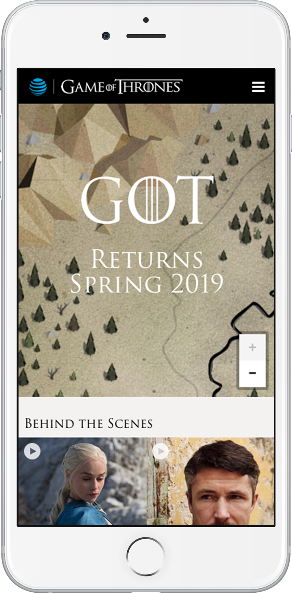
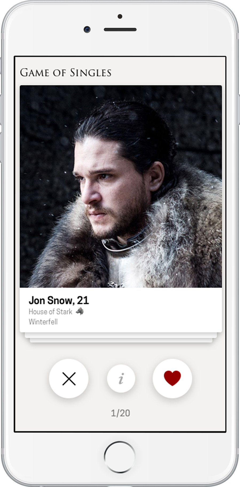
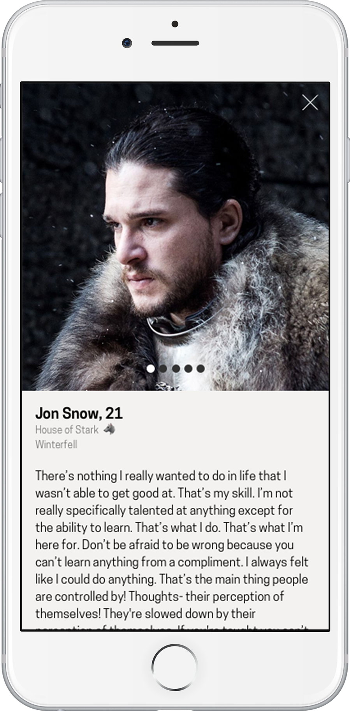
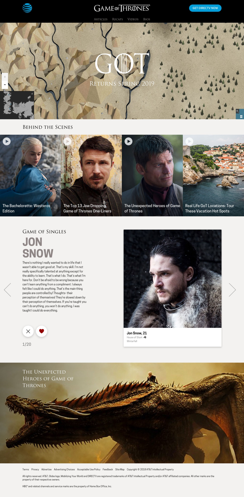
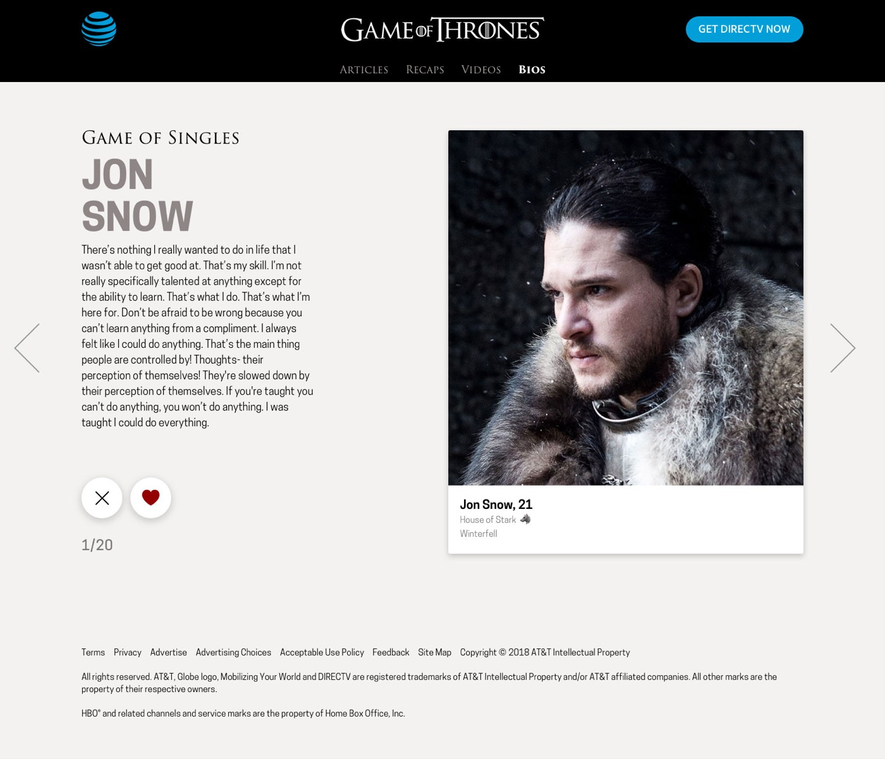
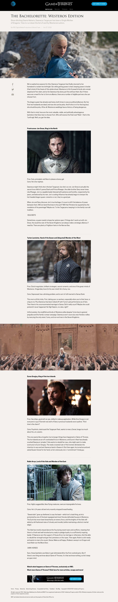

For the final season of Game of Thrones, AT&T wanted a monetizable microsite with stories and video clips for its portal users. I designed a reusable Drupal template for AT&T marketing's sponsored events and shows, then extended it for GoT: an interactive map with pins linking to episode info and clips from each region, plus a Tinder-style way to browse character bios.





